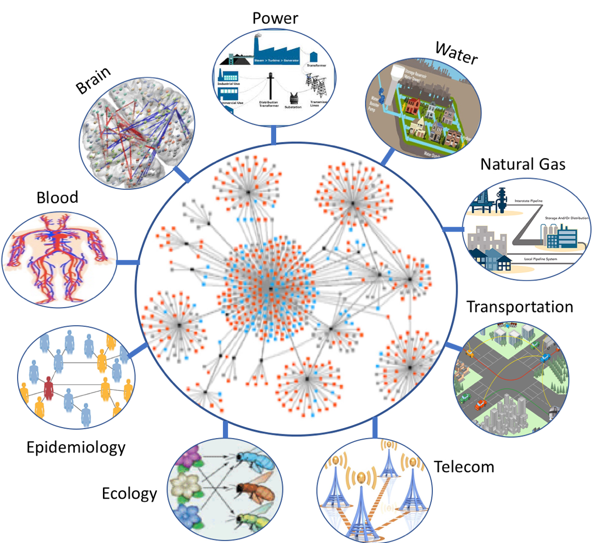
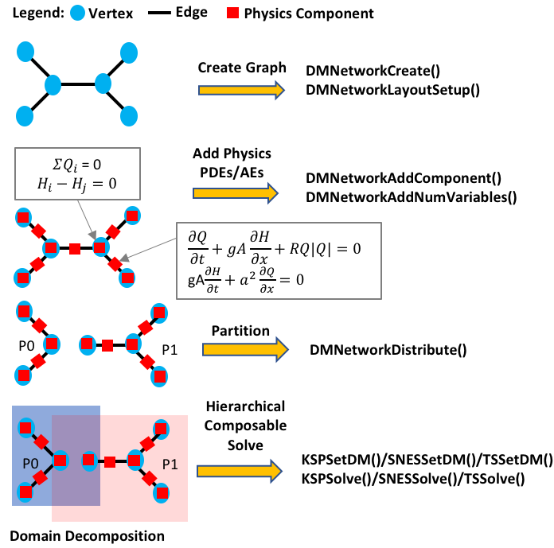

PETSc DMNetwork provides a powerful flexible scalable framework for simulation of multiphysics
phenomena over large-scale networked systems. It eases the applications development cycle by providing the necessary infrastructure through simple abstractions to define and query the network components.
Some complex systems that could exploit PETSc DMNetwork include critical infrastructures (power, water, gas, transportation,
and telecommunicaiton), human body (brain and blood circulation), ecology (foodweb and pollinator-plant), disease (epidemic and virus-host networks) and other social networks.

PETSc DMNetwork provides data and topology management, parallelization for multiphysics systems over a network, and hierarchical and composable solvers to exploit the problem structure. The key features of DMNetwork include creating the network layout,
partitioning for efficient parallelism, parallel data movement, utility routines for extracting
connectivity information, and linear, nonlinear,
and time-stepping solvers.
The steps for using DMNetwork is illustrated in the figure below; they include:
(i) Create network graph, (ii) Add physics components, and variables to the network elements (edges and vertices),
(iii) Distribute the populated network to multiple processors,
and (iv) decompose the domains and associate them with their respective linear, nonlinear, time-stepping solvers.
